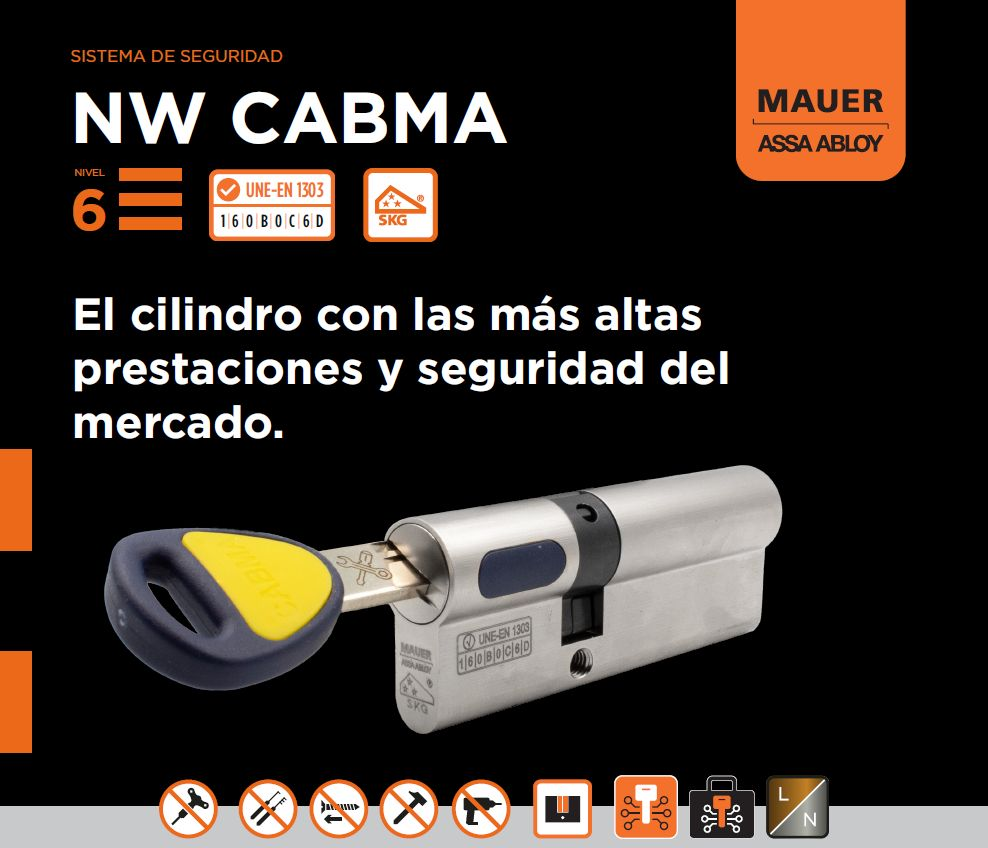
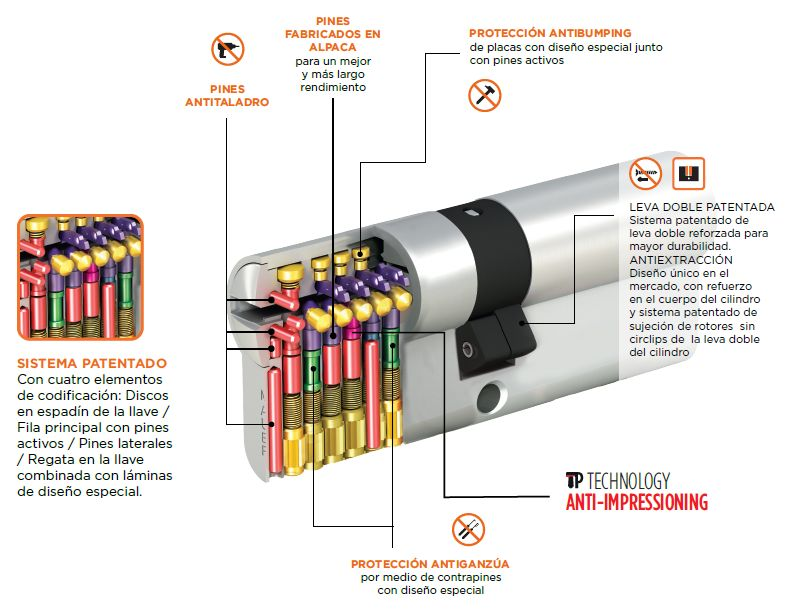
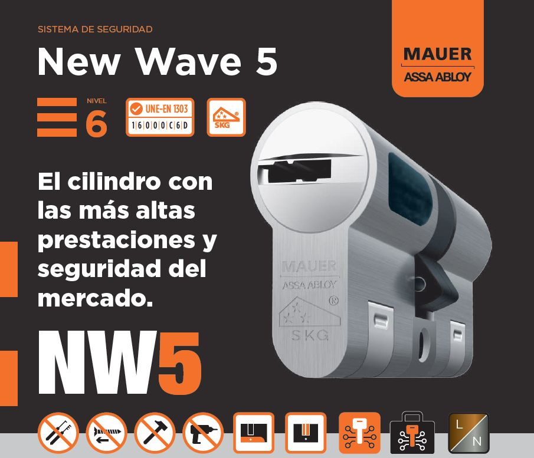
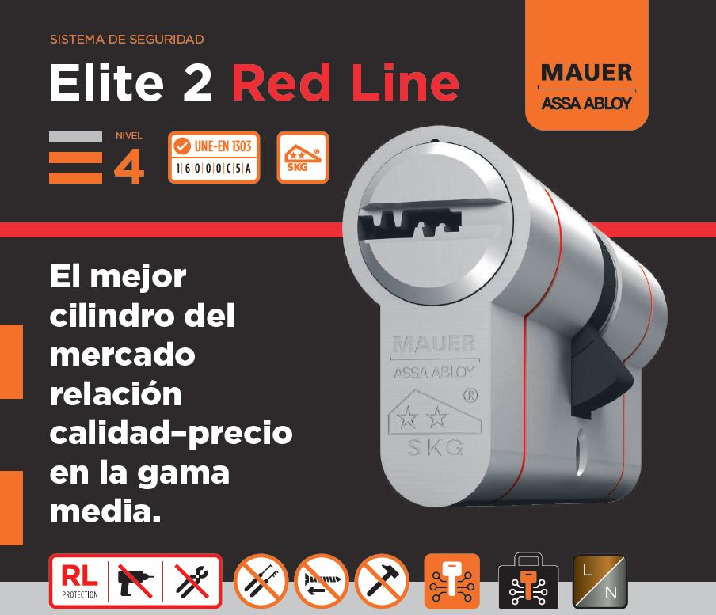
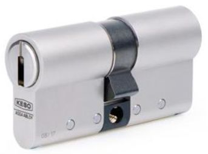
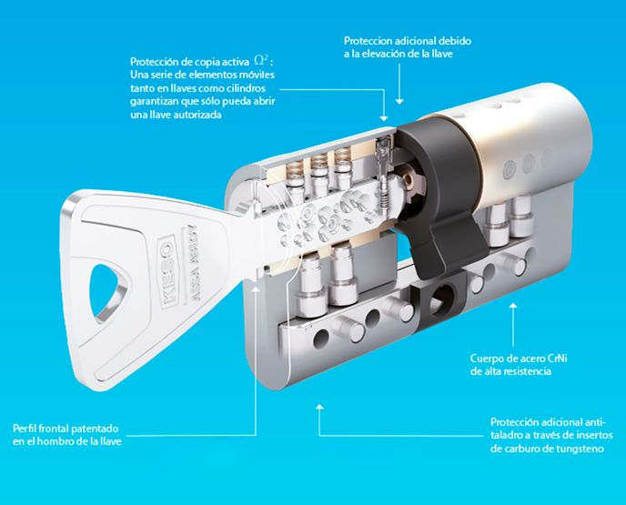
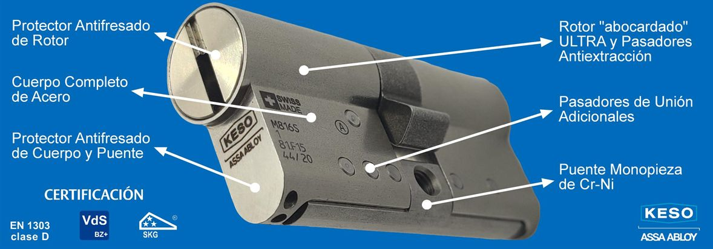

Cilindros de alta seguridad
Mauer y Keso, en 3D
El cilindro es la pieza que más ataques recibe. Las puertas CABMA montan cilindros Mauer y Keso, y también los cambiamos en puertas que ya tienes. Elige uno, gíralo y míralo por dentro.


Arrastra la llave para meterla o sacarla. Metida hasta el fondo, arrástrala de lado para girarla.
¿Contra qué te quieres proteger?
Pulsa un ataque y te marcamos los cilindros cuya ficha dice que lo frenan.
-

MauerNW5
De serie en: Pregúntanos si encaja en tu puerta- Más de 1.500 kg de resistencia a la extracción
- Insertos endurecidos y pernos de acero antitaladro
- Pines y llaves en alpaca: más de 100.000 aperturas
-
Mauer
NW4 CABMA
De serie en: Thor 20 Plus, Thor 20, iDOM- De serie en Thor 20, Thor 20 Plus e iDOM
- Antibumping, antiganzúa y antiimpresión
- Llave con pin móvil y regata, y tarjeta de seguridad
-

MauerElite 2 Red Line
De serie en: Eco-Thor, Puerta de trastero- De serie en Eco-Thor y trastero
- Antibumping, antiganzúa y antitaladro
- Llave patentada y tarjeta de seguridad
-

Keso8000 Omega2 Master
De serie en: Premium 5C, Premium 4C, Premium 3C- De serie en las Premium 5C, 4C y 3C
- Antibumping real con el sistema Omega2
- Llave incopiable, también con impresora 3D
-

Keso8000 Omega2 Premium
De serie en: Pregúntanos si encaja en tu puerta- Cuerpo y puente de acero cromo-níquel
- EN 1303 clase D y VDS clase BZ+ 2017
- 13 pasadores internos antitaladro y antiextracción
-

Keso8000 Omega2 Ultra
De serie en: Pregúntanos si encaja en tu puerta- 12 elementos extra de metal endurecido en el rotor
- Cuerpo de acero cromo-níquel
- Puente macizo de acero endurecido contra torsión y rotura
Compara los cilindros lado a lado en 3D
Elige hasta tres, míralos por dentro con la llave entrando y girando, y compara lo que dice cada ficha.
¿Qué cilindro lleva tu puerta?
Cada puerta CABMA sale de fábrica con su cilindro. Si quieres más, te lo cambiamos por uno superior.
Cambiar el cilindro de tu puerta
Las puertas acorazadas llevan cilindro de perfil europeo. Su medida son dos números, A y B: los milímetros desde el centro del tornillo de sujeción hasta cada extremo (por ejemplo, 30 x 40).
Si no lo tienes claro, vamos a verla y lo medimos nosotros. Te entregamos las llaves nuevas con su tarjeta.
Una sola llave para varias puertas
Igualar: varios cilindros con la misma llave, por ejemplo casa y trastero. Amaestrar: cada cilindro con su llave y una llave maestra que los abre todos, para comunidades u oficinas. Los Mauer lo permiten y los Keso tienen amaestramientos certificados por VDS.
Preguntas sobre cilindros
¿Qué es el bumping?
Es abrir un cilindro golpeando una llave preparada para que los pernos salten a la vez y el cilindro gire. Apenas deja marcas. Los cilindros antibumping, como el NW4 CABMA, el Elite 2 Red Line o los Keso Omega2, están diseñados para que no funcione.
¿Qué es la tarjeta de seguridad de la llave?
Una tarjeta con un código que acompaña a las llaves Mauer. Sirve para controlar quién hace copias y evitar duplicados ilegales: guárdala en un sitio seguro y no la enseñes.
¿Puedo cambiar solo el cilindro sin cambiar la puerta?
Sí. El cilindro es la pieza que más ataques recibe y se puede cambiar en puertas que ya tienes. Te decimos qué modelo encaja y lo montamos en cualquier punto de Asturias.
¿Qué cilindro lleva mi puerta CABMA?
Las Premium 5C, 4C y 3C llevan de serie el Keso 8000 Omega2 Master. La Thor 20, la Thor 20 Plus y la iDOM, el Mauer NW4 CABMA. La Eco-Thor y la puerta de trastero, el Mauer Elite 2 Red Line.
¿Qué es amaestrar o igualar cilindros?
Igualar es que varios cilindros se abran con la misma llave, por ejemplo casa y trastero. Amaestrar es que cada cilindro tenga su llave y además una llave maestra los abra todos, algo útil en comunidades u oficinas.
¿Quieres cambiar el cilindro?
Te decimos qué modelo encaja con tu puerta y lo montamos en cualquier punto de Asturias.
- Dónde estamos
- Camino de la Xacona, 40
33392 Gijón (Asturias) - Teléfono
- 985 053 052

Pulsa para ver la ruta